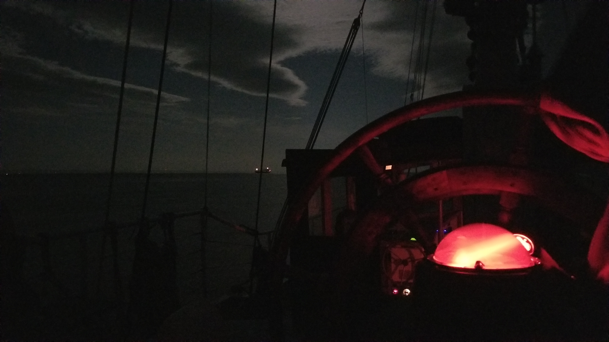
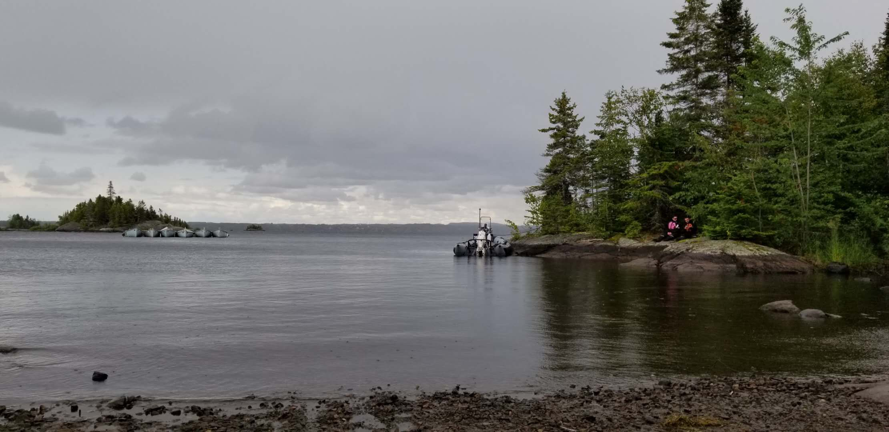

Who am I?
My name is Lawrence Liang. I am currently studying in Computer Science technologies at Champlain College. After the first semestre, I was asked to do a final project for my User experience/web interface design course, and I've chose to talk about myself and my accomplishments in this course.

Back to top
My hobbies
During the summers, I've been sailing a lot and I made several remarkable trips. I did a trip on the Lac St-Jean and a trip from Saguenay to Quebec City. It is one of my passions since you go through a lot during those trips, you see a lot of beautiful landscapes, you go through some adventurous journeys and you get a chance to see things you won't see everyday.
Night navigation on St-Lawrence river (08-15-2018)
Storm during an expedition on the Lac St-Jean (08-09-2019)
Sailing on the Lac St-Jean before another storm (08-10-2019)
Back to top
My UXWID projects
Through out the semester, our teacher made us do several interesting web design projects, and here are the results.

First personalised web page

Second personalised web page
Back to top